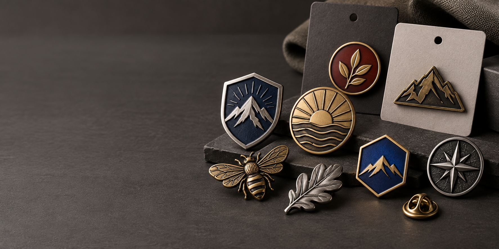
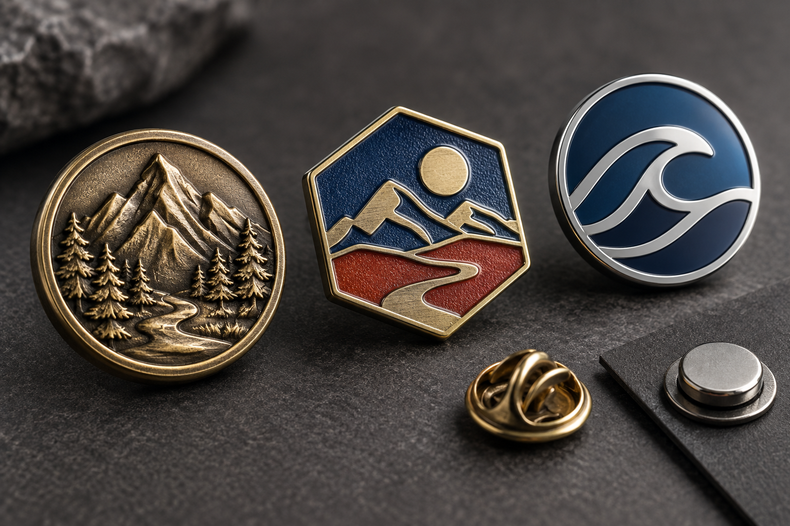

Insignias metálicas personalizadas con relieve, esmalte y acabados premium.
Si estás preparando un pedido de insignias metálicas personalizadas, un logotipo y un baño dorado ya no son suficientes para definir una buena pieza. En 2026, las marcas, los organizadores de eventos, los clubes y los distribuidores buscan productos que se reconozcan a primera vista, se sientan bien en la mano y puedan repetirse en futuras colecciones.
En esta guía reunimos las tendencias que más sentido tienen para un proyecto B2B: relieve 2D y 3D, pines esmaltados, cierres según el uso, packaging personalizado y diseños pensados para eventos y comunidades. También incluimos una lista práctica de los datos que necesitas para pedir una cotización clara.
Qué está marcando el mercado de las insignias metálicas en 2026
1. El relieve 2D y 3D vuelve a ser protagonista
El relieve aporta profundidad sin depender de muchos colores. El relieve 2D funciona bien para logotipos, escudos, nombres y formas planas. El relieve 3D es más apropiado para mascotas, edificios, mapas, vehículos, figuras deportivas o diseños que necesitan volumen.
Esta tendencia responde a una necesidad sencilla: que el producto se vea y se toque como una pieza de calidad. Para una insignia de uniforme, un pin corporativo o una moneda conmemorativa, un borde limpio y una profundidad bien definida pueden comunicar más que un diseño recargado.
Antes de fabricar el molde, conviene revisar el diseño a tamaño real. Las líneas demasiado finas, los textos pequeños y los espacios estrechos pueden perder legibilidad durante el troquelado o el acabado. Consulta nuestro proceso de fabricación de insignias metálicas para preparar mejor el arte.
2. El color se elige según el uso: esmalte blando, duro o impresión
Los pines esmaltados personalizados siguen siendo una opción muy versátil para merchandising, eventos, clubes y marcas. La elección de la técnica debería partir del diseño y del uso final:
- Esmalte blando: deja el color ligeramente por debajo del borde metálico y ofrece una textura perceptible. Es una buena opción para colores vivos, formas reconocibles y pedidos con presupuesto controlado.
- Esmalte duro: se pule hasta lograr una superficie lisa, con una apariencia más cercana a la joyería. Funciona bien para pines corporativos, regalos de empresa y diseños que necesitan una lectura limpia.
- Impresión UV con resina o epoxi: resulta útil para degradados, sombras, ilustraciones, fotografías y detalles que no se resuelven bien con esmalte tradicional.
No existe un acabado universalmente mejor. El mismo logotipo puede necesitar esmalte duro para una presentación corporativa y esmalte blando para una colección de venta al detalle. La guía sobre pines esmaltados personalizados ayuda a comparar las opciones antes de cotizar.
Cuando compares pines metálicos personalizados, revisa siempre el conjunto completo: metal base, acabado, color, cierre y empaque. La técnica de esmalte es solo una parte del resultado.

El relieve, la textura del esmalte y el tipo de cierre cambian la experiencia de uso.
3. El cierre deja de ser un detalle secundario
El cierre debe elegirse junto con el tamaño, el peso y la prenda donde se usará la pieza:
- Cierre mariposa: una solución habitual para solapas, tarjetas y pines ligeros.
- Cierre de goma: práctico para gorras, mochilas y productos de venta al detalle.
- Imán: evita perforar la tela y puede ser interesante para placas de nombre o uniformes delicados. Hay que comprobar que la fuerza del imán sea adecuada al peso de la pieza.
- Doble poste o broche de seguridad: útil cuando el diseño es más grande, la prenda se mueve mucho o se busca una fijación más estable.
Una consulta frecuente es si una insignia metálica para uniforme debe llevar alfiler o imán. La respuesta depende del tejido, del peso y del ritmo de uso. Para hoteles, restaurantes, tiendas y equipos de atención al cliente, conviene priorizar comodidad, lectura del nombre y facilidad de colocación. En otras palabras, las insignias para uniformes deben diseñarse desde el uso real y no solo desde la apariencia.
4. El packaging convierte un pin en una pieza de merchandising
Un pin suelto cumple su función. Un pin presentado en una tarjeta de marca, una bolsa individual o una caja pequeña puede convertirse además en un recuerdo, un artículo de colección o un producto listo para vender.
En 2026 vemos más proyectos que definen el empaque desde el inicio, especialmente cuando incluyen:
- series limitadas o colecciones por capítulos;
- tarjetas con la historia del diseño;
- sets para asistentes, colaboradores o distribuidores;
- numeración, categorías o variantes de color;
- separación por lotes para facilitar la entrega en eventos.
El packaging también debe ser práctico. Si buscas una comunicación sostenible, especifica el tipo de papel, la certificación o el material que realmente puedes acreditar. Es mejor describir con precisión una tarjeta de papel certificado o un empaque reducido que hacer una promesa ambiental genérica.
5. Cultura pop, gaming y entretenimiento abren nuevas oportunidades
Los calendarios de eventos españoles para 2026 muestran una presencia continua de ferias de entretenimiento digital, videojuegos, manga, anime y cosplay. La oportunidad para fabricantes y distribuidores está en crear piezas originales para artistas, tiendas, comunidades, torneos y eventos propios.
Los formatos que mejor encajan suelen ser:
- pines de silueta especial para ilustradores y marcas independientes;
- colecciones de tres o más diseños con una estética común;
- insignias de acceso, staff o categorías;
- tokens metálicos para dinámicas, premios o fidelización;
- tarjetas personalizadas que faciliten la venta en un stand.
Si el diseño pertenece a una marca, artista o franquicia, asegúrate de contar con los derechos necesarios antes de fabricar.
6. Las colecciones se diseñan para poder repetirse
Los compradores B2B no solo necesitan que el primer lote salga bien. También quieren poder repetirlo, ampliar una colección o cambiar una variante sin perder consistencia.
Por eso, cada vez es más útil definir un pequeño sistema de producto: una familia de formas, una paleta de baños, dos o tres tamaños, un cierre estándar y reglas claras para el packaging. Esta estructura ayuda a controlar futuras reediciones y evita que cada nuevo diseño tenga que empezar desde cero.
La misma lógica se aplica a las medallas para eventos. Si un evento tiene varias distancias o categorías, conviene decidir desde el diseño qué elementos pueden variar: cinta, color, texto, acabado o empaque. Así el conjunto mantiene una identidad visual coherente.
También conviene documentar el material para pines metálicos, el grosor y los acabados para insignias metálicas elegidos. Esa ficha técnica facilita las reediciones y evita diferencias de tono, brillo o peso entre un lote y el siguiente.
Cómo elegir una insignia metálica según el proyecto
| Objetivo | Producto recomendado | Decisiones que debes cerrar |
|---|---|---|
| Uniformes, hoteles y restaurantes | Insignia o placa de nombre metálica | Tamaño del nombre, tipo de cierre, peso, acabado y tejido de la prenda |
| Marca, congreso o kit de bienvenida | Pin metálico o pin esmaltado | Logo, tamaño, colores, acabado, cierre y tarjeta de presentación |
| Artista, tienda o comunidad de fans | Colección de pines personalizados | Forma, técnica de color, variantes, cantidad por diseño y packaging |
| Carrera, torneo o campeonato | Medalla metálica personalizada | Tamaño, relieve, cinta, categorías, fecha del evento y empaque |
| Reconocimiento o aniversario | Moneda, medalla o pieza conmemorativa | Diseño a una o dos caras, relieve, acabado, numeración y caja |
Si dudas entre una pieza metálica y un pin de metacrilato, piensa primero en la experiencia que quieres crear. El metal ofrece peso, relieve y una sensación más duradera. El metacrilato puede ser útil cuando buscas ligereza, transparencia o una ilustración a todo color. Elige el material según el uso, el diseño y el presupuesto.
Qué datos enviar para cotizar pines o insignias metálicas
Una cotización precisa empieza con información concreta. Envía, si es posible:
- Logotipo, dibujo o referencia visual, preferiblemente en formato vectorial.
- Tipo de pieza: insignia, pin, placa, medalla, moneda o token.
- Medida aproximada, grosor y cantidad total.
- Número de colores y acabado deseado: níquel, oro, latón, antiguo u otro.
- Técnica de color: esmalte blando, esmalte duro, impresión o resina.
- Tipo de cierre y lugar de uso.
- Tarjeta, bolsa, caja o separación por lotes, si la necesitas.
- País de entrega y fecha límite real del evento o lanzamiento.
Con estos datos podemos recomendar el material base, el relieve, el acabado y el empaque con mayor precisión. Si todavía no tienes el diseño final, una referencia visual y la cantidad aproximada son suficientes para empezar una conversación técnica.
Preguntas frecuentes sobre insignias metálicas personalizadas
¿Cuál es la diferencia entre insignia metálica, pin metálico y chapa?
En el uso diario, los términos cambian según el país y el contexto. “Insignia” suele relacionarse con uniformes, asociaciones o emblemas. “Pin” o “pin metálico” suele referirse a una pieza pequeña para solapa, gorra o mochila. “Chapa” y “distintivo” también aparecen en búsquedas de merchandising y eventos. Para pedir precio, lo más importante es indicar el uso, la medida y el sistema de fijación.
¿Qué material se usa para fabricar pines metálicos?
No existe un único material correcto para todos los proyectos. La elección del metal base debe considerar el tamaño, el peso, el nivel de detalle, el acabado, el cierre y el presupuesto. Por eso es mejor pedir una recomendación técnica junto con el diseño.
¿Qué es mejor, esmalte blando o esmalte duro?
El esmalte blando conserva un relieve perceptible y suele funcionar bien para diseños coloridos. El esmalte duro ofrece una superficie lisa y una apariencia más premium. Si el diseño tiene degradados, sombras o detalles muy finos, puede convenir una impresión protegida con resina.
¿Con cuánta anticipación debo pedir medallas para un evento?
Empieza con margen para revisar el diseño, aprobar el arte técnico, fabricar el molde, producir, controlar la calidad y transportar el pedido. Si tienes una fecha fija, indícala en el primer contacto. Para una guía más completa, consulta medallas personalizadas para eventos.
Pide una recomendación para tu próximo lote
Una tendencia solo es útil cuando mejora el resultado final. Comparte tu logotipo, la cantidad aproximada, el tamaño, el uso y el país de entrega. Te ayudaremos a comparar insignias metálicas personalizadas, pines esmaltados, acabados, cierres y opciones de packaging antes de producir.